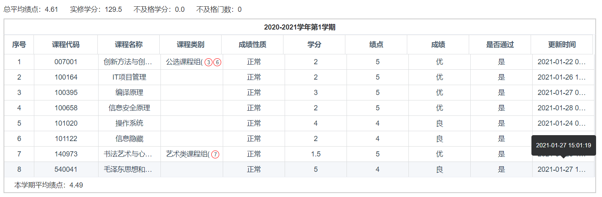
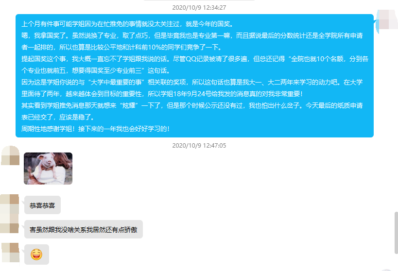

或许
已经没有或许了。
现在
是 2 月 2 日。当我打下上方的 “或许” 两个字的时候，还是 1 月 27 日的午夜。而如今差不多是一周之后了。
这一周其实发生了很多事。很多很多事。

首先是我的成绩。
这学期我的状态可谓是跌宕起伏。从刚开学那时，我还踌躇满志，因为我携着前年下半年刻苦内卷的精神、以及去年上半年在家苦读的记忆，拿了一个国奖。

今年的国奖 17/18 两个年级一共 17 个名额，我凭借不算太拉胯的课外经历以及取巧的绩点百分比，有幸成为了这 17 个人中的一个。
大一刚入校，我什么都不懂。来自西南偏远城市的我，不知道什么是人上人，不知道什么是内卷，不知道前百分之多少才可以保研，也不知道我这个学科到底是要求学生拥有怎样的能力（现在也不清楚），更别提如何达到那个标准了。大概入校半个月左右吧，我参加了院内的学生会的选拔。17 级的院内学生会秘书处一共有 6 位干事，我大概是被当时的副部长以及与我聊天的这位学姐看好，被选了进来。（后面证实我或许辜负了她们的期望）
我就当面问学姐：
“大学里面究竟什么是最重要的。”
看到学姐欲言又止的样子，我想到学姐其实也就刚刚上大二，这个问题可能有些太难了，于是补了句：
“啊，不是说 ‘最重要’，就是重要的事情有哪些呢？”
学姐她当时并没有特别正面地回复这个问题，反过来问了些我想做什么。但我哪里知道呀……
之后的事情貌似不必记得太清楚。那天之后，不知是第二天还是第三天，学姐给了我回复，而我正坐在寝室里面写代码：
“学弟最近在评奖学金的时候我终于发现了什么是重要的。”
“到了大二会根据大一一年的表现评奖学金，有一个国家和上海市的，有 8000 全院也就 10 个名额。”
“分到各专业最多也就前五，想要得这个奖除非排名专业前三。或者参加过很硬核的科技比赛。”
“其实在保研的时候看的也就是这两个东西，绩点和科技比赛，学生工作或者志愿活动属于锦上添花的部分。”
这段话一个字都不会错，因为我存在电脑里了。
我看这段话或许并不仔细，于是连重点都放错了。我以为这段话的重点是 “国奖”，但实际上应该是 “绩点和科技比赛” 吧。大一、大二两个学期都算是在以这个 “国奖” 为目标。朴素的我并不知道国奖意味着什么，但就是觉得它到手了就说明我很厉害。
事实这么理解也没错，如果拿到国奖了，那么自己也不需要担心自己保研了吧？
结果是我在大三拿到了。可拿到这个奖之后，我未来的意义将何在呢？
不推脱，我想我这个学期都因为专业内竞争压力不足，以及本身对美好生活的向往不激烈，过得拖拖拉拉，完全没个人样儿。
特别是 10 月的一场病后，同时间的校园卡冻结让我逐渐不去图书馆强制学习。我课程内的学习基本上就停滞了。于是才有了我这 4.49 的单学期绩点。
“或许” 时
打下那两个字的时候，我的毛概还没出来。虽然我的操作系统和信息隐藏良了，但是剩下的 10 个学分（毛概 + 编译原理 + 信安原理）也还算是有一些信心。
虽然毛概得到良在意料之外，但是编译原理 + 信安原理都是优也还算是稳固了绩点。目前 5 个学期总绩点为 4.61，转换到隔壁专业已经是无法保研了，但是对于现在我这个专业却是第一名的样子。
我并不觉得有什么可 “骄傲” 的，甚至还觉得很羞愧，十分地难为情，觉得自己不配。隔壁专业那么多人不仅绩点稳在 4.8~4.9 的保研圈内，并且还在自己感兴趣的领域重拳出击。我真的是十分仰慕他们。
而反观我，则是差劲多了。凡是我参加的比赛，都没有得到奖项，拖累了那么好的队友；凡是我参加的工程，过程都不是很顺利，我极低的技术力和钻研心让我难以完成特别浩大的项目；凡是我参与的活动，我所展现的水平都很难满足我个人的期望，并且虎头蛇尾……
接下来这一个学期，我不知道我能做什么。